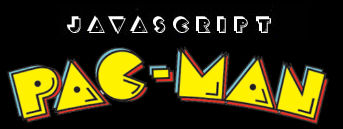

Version 2.0
Javascript Pacman - A pure javascript implementation of the 80s arcade classic pacman. Play directly in the web browser. By Matt Platts.
- Scatter, chase and random movements for ghosts - similar to the original game
- Play 10 pre-designed levels, or random maze generation
- No plugins or javascript libraries - pure javascript code implementation
- Originally written in 1999 for IE and Netscape, based on code from an early Oric-1 game from 1985
- Updated in 2016 to generate maze graphics and movements from a simple binary grid and use css styling.
- Random mazes added 2019